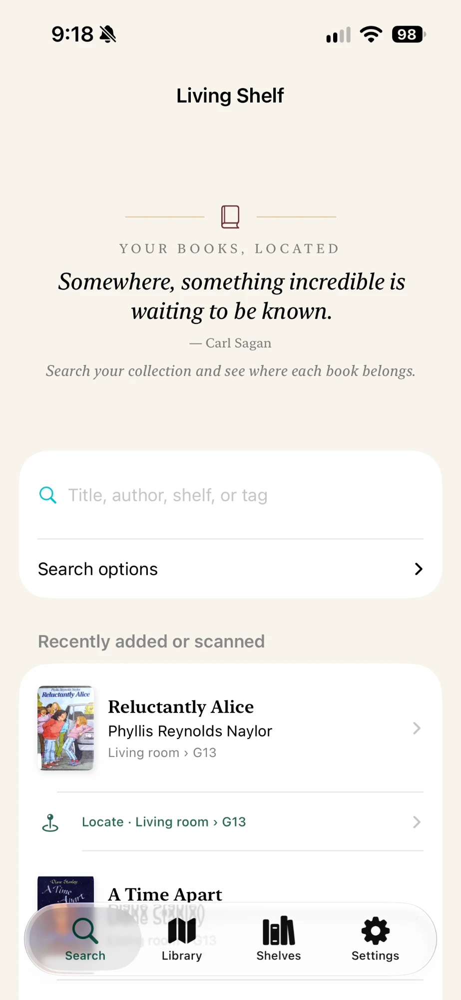
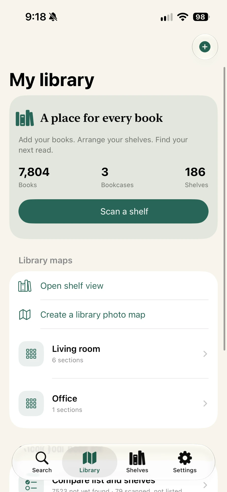
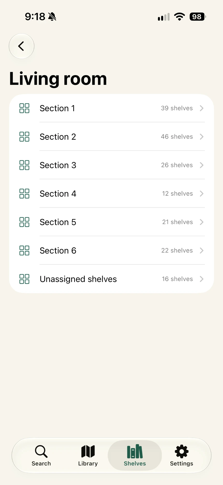
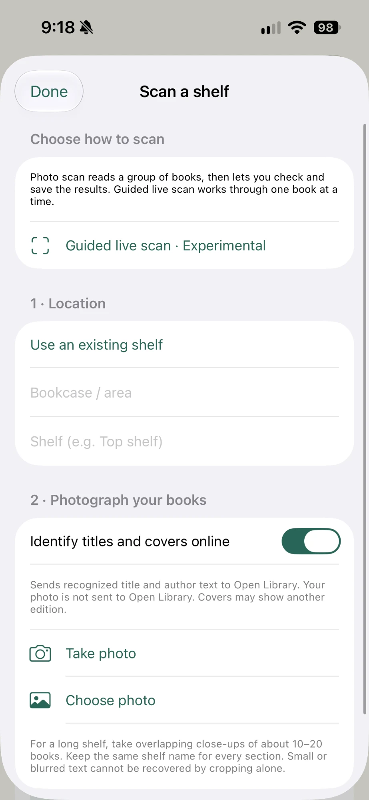
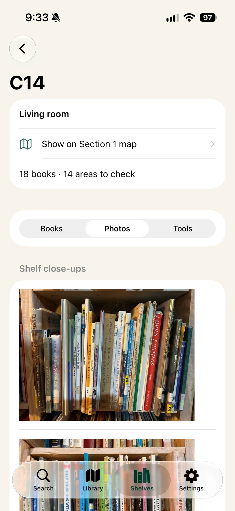

Living Shelf
Find the book you want, right where you left it.
Email akeath18@gmail.com. Please include your device model and iOS version, and describe what you were doing when the problem happened.
A look at the app





Getting started
- Library — map a bookcase, divide it into sections, and mark the individual shelves.
- Scan a shelf — photograph a shelf and Living Shelf reads the spines, matching clear titles automatically.
- Search — look up a book by title, author, bookcase, or shelf.
- Locate — opens the library map and shows the shelf a book belongs to.
Common questions
A book was read incorrectly, or was missed entirely.
Results the app is unsure about stay under Needs checking rather than being saved silently. Open that list to identify or correct a title. During scan review you can remove an incorrect reading with the trash button, and Undo last removal brings it back. Removing a result from a scan never deletes a book you already saved.
The grid doesn't line up with my shelves.
In library or section setup, choose Choose grid area, then Angle grid and adjust lines. Drag the outline corners to match your photo, and use Rows or Columns to move a single divider. Select a dot and use the arrow buttons for fine adjustment. Shelves can be removed or restored individually, so bookcases with uneven columns still map correctly.
Can I use it without an internet connection?
Yes. Reading book spines happens entirely on your device. Online search only adds catalog details and cover art, and can be turned off in Settings.
Can I share a library with someone else?
Yes. A library can be shared through your iCloud account with people you invite. You can stop sharing at any time.
How do I move my library to a new device?
Turn on iCloud sync and sign in to the same Apple Account on the new device. You can also export a library backup file and open it on the other device.
Will my books be lost if I delete the app?
Deleting the app removes the library stored on that device. Export a backup first if you want to keep it.
Privacy
Living Shelf has no account, no analytics, and no advertising. Your library stays on your device and, if you enable sync, in your own iCloud account. See the privacy policy.
Requirements
iOS 17 or later, on iPhone or iPad.